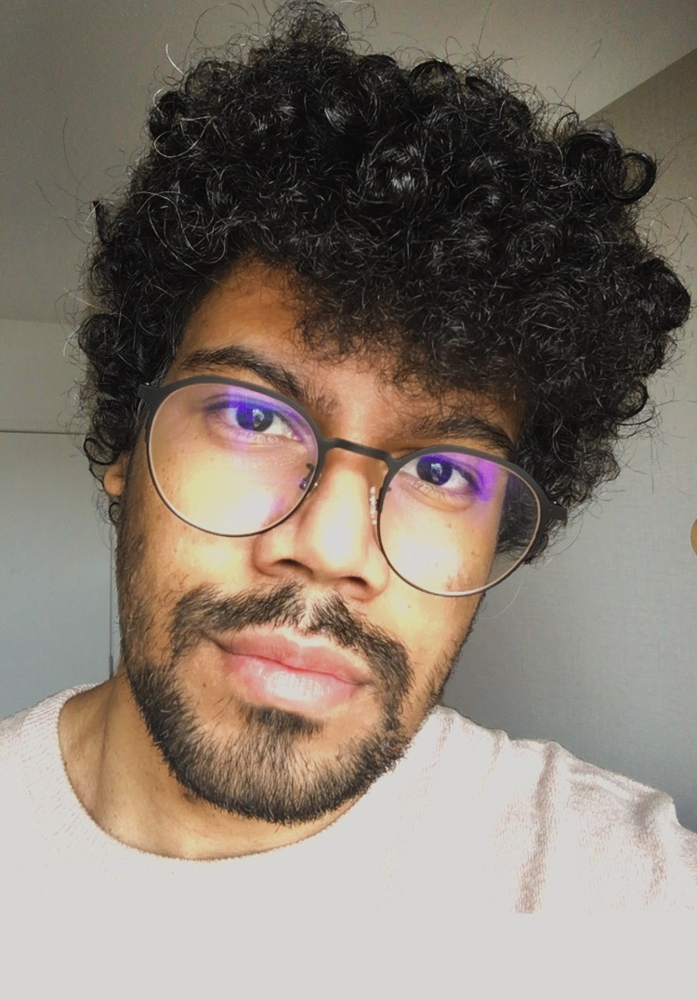

- EU SOU VINICIUS GONTIJO
ESTUDANTE DA FIAP
Apaixonado por tecnologia, sempre estou em busca de novos desafios e conhecimento. Por isso ingressei na FIAP, acredito que fará eu alcançar um o próximo nível.
- SOBRE MIM -
Nerd de carteirinha e amante da cultura pop, tudo que está relacionado, desde séries, filmes a action figure.
Em meus momentos livres gosto de relaxar jogando, mas ultimamente estou passando mais raiva do quê me divertindo com o novo jogo Elden ring
E tenho como hobby cozinhar, sempre buscando aperfeiçoar e experimentar novos sabores